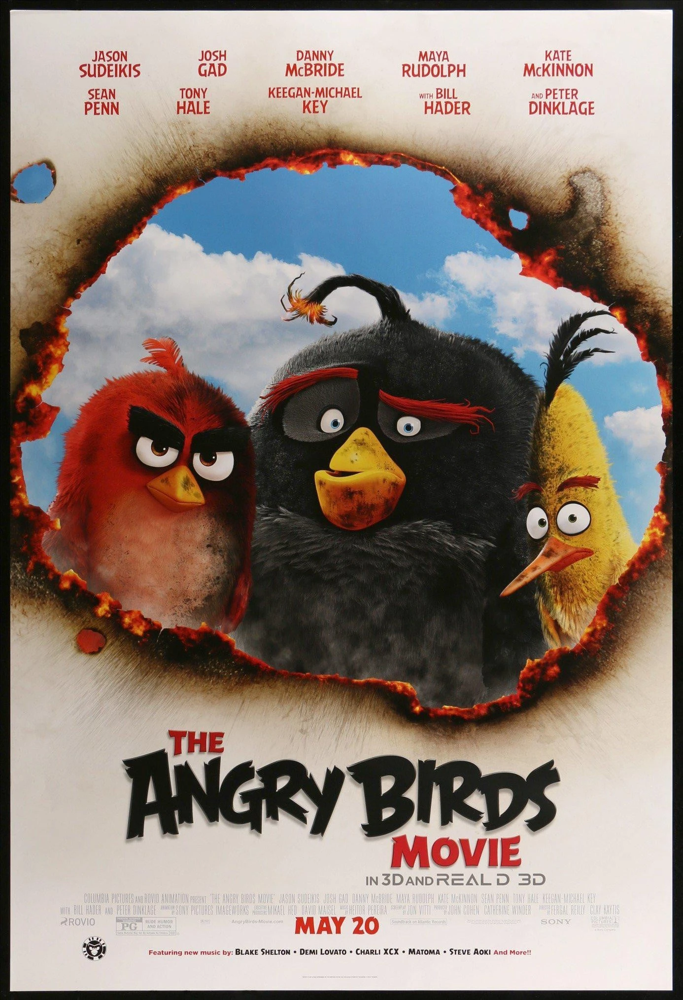
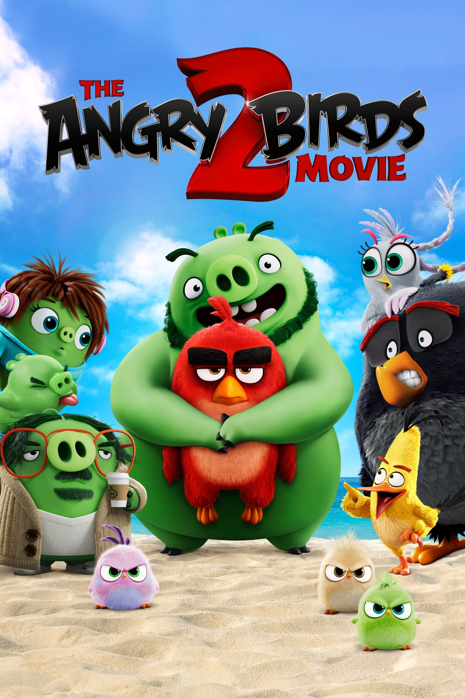

Angry Birds is a fantasy-based media franchise created by the Finnish company Rovio Entertainment. The series focuses on multi-colored birds that try to save their eggs from green-colored pigs, their enemies. Inspired by Crush the Castle,[1] the game has been praised for its successful combination of fun gameplay, comical style, and low price. Its popularity led to many spin-offs; versions of Angry Birds created for PCs and video game consoles, a market for merchandise featuring its characters, Angry Birds Toons, a televised animated series, and two films; The Angry Birds Movie and its sequel The Angry Birds Movie 2. By January 2014, there had been over 2 billion downloads across all platforms, including both regular and special editions.[2][3] By July 2015, the series' games had been downloaded more than 3 billion times collectively,[4] making it the most downloaded freemium game series of all time. The original Angry Birds has been called "one of the most mainstream games out right now",[5] "one of the great runaway hits of 2010",[6] and "the largest mobile app success the world has seen so far".[7] The first main-series video game sequel, Angry Birds 2, was released on July 30, 2015.
The first game in the series was initially released in December 2009 for iOS.[8] At the time, the swine flu epidemic was in the news, so the staff decided to use pigs as the enemies of the birds.[9] The company released ports of the game to other touchscreen smartphone operating systems, including Android, Symbian, and Windows Phone, and PCs.
The Angry Birds Movie 2 (also referred to as The Angry Birds 2 Movie or just simply Angry Birds 2) is a 2019 computer-animated comedy film based on Rovio Entertainment's Angry Birds video game series, produced by Columbia Pictures, Rovio Animation, and Sony Pictures Animation,[N 1] and distributed by Sony Pictures Releasing. The sequel to The Angry Birds Movie (2016), the film was directed by Thurop Van Orman and co-directed by John Rice (in their directorial debuts) from a screenplay by Peter Ackerman, Eyal Podell, and Jonathon E. Stewart. Jason Sudeikis, Josh Gad, Danny McBride, Maya Rudolph, Tony Hale, Bill Hader, and Peter Dinklage reprise their roles from the first film, with newcomers Leslie Jones, Rachel Bloom, Awkwafina, Sterling K. Brown, Eugenio Derbez, JoJo Siwa, and Brooklynn Prince joining the ensemble cast. In the film, the birds are forced to team up with the pigs when an advanced weapon threatens both Bird and Piggy Islands.
Production on a sequel to The Angry Birds Movie began in August 2016 with the goal being that the sequel improves upon the first film. New ideas for the film were conceived with the premise being that the birds and pigs work together to save themselves, which typically does not happen in most Angry Birds games. New characters for the film were announced in March 2019 along with new cast members. Heitor Pereira returned to compose the film's score with artists such as Kesha and Luke Combs contributing tracks for the film.[5][6][7]
The film was theatrically released on August 2, 2019 in the United Kingdom and Ireland, and in the United States on August 13. It has grossed $154 million worldwide and received mixed reviews,[8] although many critics considered it an improvement over its predecessor. It is also the best reviewed animated film based on a video game on Rotten Tomatoes, as of 2020.[9]
